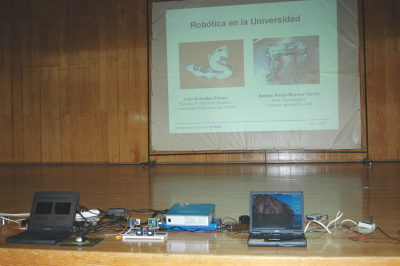
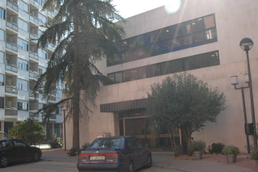
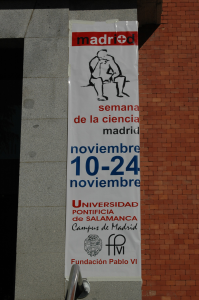
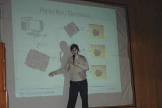
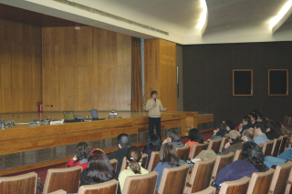
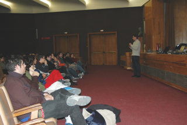
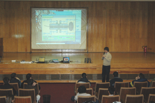
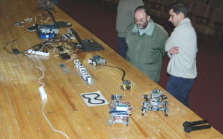
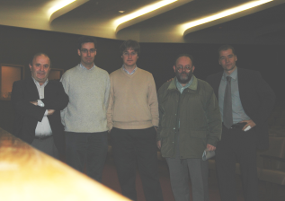

|
 |
|
|
“Robótica en la Universidad”.UPSAM. Nov-2004 |
|
 |
|
Título: “Robótica en la Universidad”
Evento: IV Semana de la Ciencia en Madrid
Lugar: Universidad Pontificia de Salamanca en Madrid (UPSAM)
Fecha: 17 de Noviembre de 2004
Ponentes:Andrés Prieto-Moreno (Ifara Tecnologías) y Juan González Gómez (Universidad Autónoma de Madrid, UAM)
En esta charla de carácter divulgativo se muestra el funcionamiento de diferentes robots. Primero se hace un repaso de la robótica en la UPSAM, desde el comienzo en el año 2000 hasta la introducción de los microcontroladores PIC en el laboratorio de la asignatura de Arquitectura de Computadores. A continuación se describe el robot “hola mundo”, realizado con las tarjetas Skypic y CT293, perfecto para iniciarse en el mundo de la robótica. Después se introducen los robots articulados y se hacen demostraciones de tres de ellos: “los ojos”, el robot ápodo Cube Revolutions y el perro robot Puchobot. Finalmente se enseña el funcionamiento del “Observer”, desarrollado en el Club de Robótica-Mecatrónica de la EPS-UAM, que se telecontrola desde un PC y envía imágenes por radio.
|
Descarga de la presentación |
|
upsam-robots.sxi (2,2MB) |
Presentación para OpenOffice 1.1.2 |
|
upsam-robots.pdf (1,0MB) |
Presentación en PDF |
Se condecen permisos para usar, modificar y/o distribuir esta presentación, siempre que se mantenga esta nota.
Tarjeta Skypic, entrenadora para microcontroladores PIC de 28 pines.
Tarjeta ct293+. Control de motores y sensores.
Cuaderno técnico II, trucaje de los servos Futaba
Cuaderno técnico III. Servos Futaba 3003. Características, planos y modelo 3D.
Artículo presentado en el Clawar 2004, sobre Cube Revolutions: “Locomotion of a Modular Worm-like Robot using a FPGA-based embeded MicroBlaze Soft-processor”
Taller en la UAX. I taller de robótica celebrado en la universidad Alfonso X el Sabio, en Madrid.
Perro robot PUCHOBOT.
Robot Cube Revolutions
Robot ápodo Cube Reloaded (Versión anterior a Cube Revolutions)
La conferencia tuvo lugar el Miércoles 17 de Noviembre, en el salón de actos de la Universidad Pontificia de Salamanca en Madrid (UPSAM). Fue la primera de un ciclo de tres charlas sobre robótica.
|
 Edificio de entrada al salón de actos. Universidad Pontificia de Salamanca, Campus de Madrid |
 Cartel anunciando la IV semana de la ciencia |
|
 Andrés explicando la electrónica de Puchobot |
 La audiencia atenta a las explicaciones de Andrés
|
|
 Juan González explicando los robots articulados |
 Despliegue de medios: dos ordenadores portátiles con Linux y 6 robots: Puchobot, Cube Revolutions, Skytritt, clónico, La hormiga y observer. |
|
 El profesor Carlos Soria contemplando los robots |
 Los ponentes, Andrés y Juan, junto a los organiadores: Víctor, Carlos y David |
A Ifara tecnologías, por contar conmigo para el ciclo de charlas sobre robótica en la UPSAM.
A Andrés Prieto-Moreno por gestionarlo todo. Yo sólo he tenido que ir y hablar :-)
1/Enero/2005: Añadido enlace a Cube Revolutions
23/Nov/2004: Publicada información en esta web